If you don't want to print now,
Data from two groups
When data are collected from two groups, we are usually interested in differences between the groups in general. The specific individuals are of less interest. Questions are therefore about the characteristics of the populations or processes that we assume underlie the data.
Example
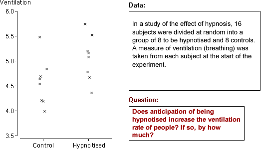
The questions do not refer to the 16 specific subjects — they ask about whether anticipation of hypnosis affects the ventilation rate in general. We would like to use the answers to predict what will happen to other people.
Data and model
Data from two groups can be displayed with two histograms:
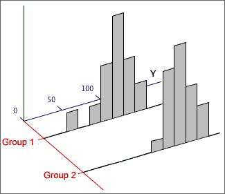
The diagram below illustrates a possible model for the data above.
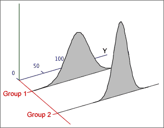
Parameters
A normal model for two groups has four unknown parameters (the mean and standard deviation for each normal distribution). These parameters give considerable flexibility and allow the model to be used for a variety of different data sets.
(The number of parameters can be reduced to three if it is assumed that the two standard deviations are the same, but we will not consider this type of model here.)
Parameter estimates
A normal model for 2-group data involves 4 unknown parameters, µ1, µ2, σ1 and σ2. The means and standard deviations in the two samples provide objective estimates of the four parameters.
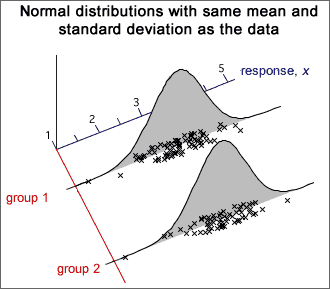
Comparing the populations
Although standard deviations in the two populations may also differ, we are usually most interested in the difference between the population means. Differences between the means can be expressed in terms of the model parameters with the following questions.
Randomness of sample difference
These questions are about µ2 - µ1 and the
best estimate of it is  .
However,
.
However,  cannot
give definitive answers since
it is random — it varies from sample to sample.
cannot
give definitive answers since
it is random — it varies from sample to sample.

Without an understanding of the distribution of  ,
it is impossible to properly interpret what the sample difference, 0.104 kg,
tells you about the difference between the underlying population means.
,
it is impossible to properly interpret what the sample difference, 0.104 kg,
tells you about the difference between the underlying population means.
Sample mean and sum
The mean of a random
sample,  ,
has a distribution that is approximately normal if the sample size, n, is
large and alway has a
mean and standard deviation that depend on the population mean, µ, and standard deviation,
σ,
,
has a distribution that is approximately normal if the sample size, n, is
large and alway has a
mean and standard deviation that depend on the population mean, µ, and standard deviation,
σ,
| = μ |
| = |
Occasionally the sum of values in a random sample values is more useful than the mean,

Its distribution is a scaled version of the distribution of the mean — the same shape but different mean and standard deviation.


Mean vs Sum
As the sample size increases,

Sum and difference of two variables
Applying the result about the sum of a random sample to a sample of size n = 2, X1 and X2,
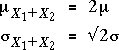
If we generalise by allowing X1 and X2 to have different means, µ1 and µ2, but the same σ,
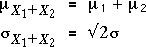
A similar result holds for the difference between X1 and X2:
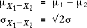
If X1 and X2 are independent and have normal distributions, their sum and difference are also normally distributed.
General result
The results generalise further to independent variables that may have different means and standard deviations.

The formulae for the standard deviations are more easily remembered in terms of the variances of the quantities. For example,

Finding probabilities
To find the probability that a sum or difference satisfies an inequality, the inequality should be translated into ones about a z-score, using the mean and standard deviation of the quantity,
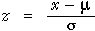
The standard normal distribution can then be used to find the probabilities. The examples below illustrate the method.
Example (total of several variables)
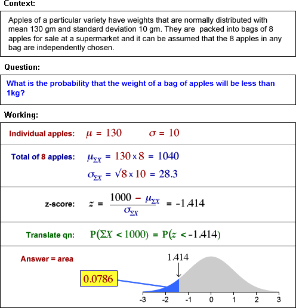
Example (sum of two variables with different sd)
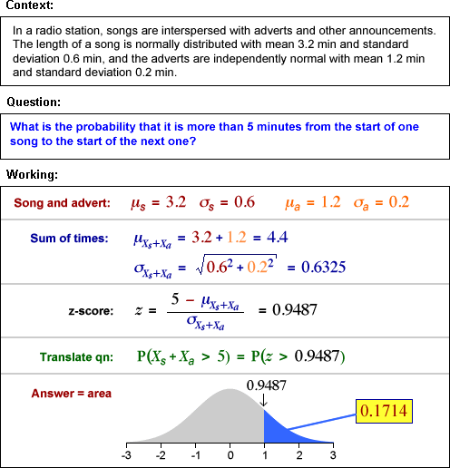
Difference between means
The difference between any two independent quantities X1 and X2 has a distribution with

Applying this to the difference between the means of two random samples,

Irrespective of the distributions within the
two groups,

Estimation error
The difference between the sample means,  ,
is a point estimate of the difference between the means of the underlying populations, µ2 - µ1.
In order to properly interpret it, we must understand the distribution of
the estimation error.
,
is a point estimate of the difference between the means of the underlying populations, µ2 - µ1.
In order to properly interpret it, we must understand the distribution of
the estimation error.

Replacing σ12 and σ22 by s12 and s22 gives an approximate error distribution,

The standard deviation of these errors is the standard error of the estimator.
Examples

Our best estimate is that anticipation of hypnosis results in a mean ventilation rate that is 0.491 higher than the control group. From the error distribution, the error in this estimate is unlikely to be more than about 0.6.
If σ1 and σ2 were known...
| Prob ( | is within ± 1.96 | of μ2 - μ1) = 0.95 |
so a 95% confidence interval for µ2 - µ1 would be
| ± 1.96 |
When σ1 and σ2 are unknown...
We must replace σ1 and σ2 by s1 and s2 in the confidence interval, and the constant '1.96' must be replaced by a slightly larger value from t-tables,
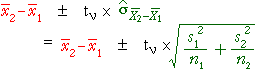
where the degrees of freedom for the t-value are
ν = min (n1−1, n2−1)
(A more complex formula is available that gives a higher value for ν. It is slightly better but the difference is usually negligible.)
Example
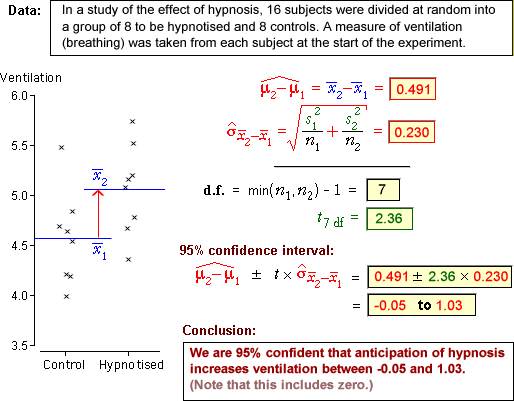
Testing for a difference between two means
The difference between two groups that is of most practical importance is a difference between their means.
H0 : μ2 − μ1 = 0
HA : μ2 − μ1 ≠ 0
The summary statistic that throws most light on these hypotheses is the difference
between the sample means,  .
Testing therefore involves assessment of whether this difference is unusually
far from zero.
.
Testing therefore involves assessment of whether this difference is unusually
far from zero.
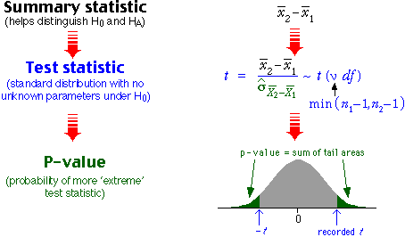
As with all other hypothesis tests, a p-value near zero gives evidence that the null hypothesis does not hold — evidence of a difference between the group means.
Example

General properties of p-values
A statistical hypothesis test cannot provide a definitive answer about whether two groups have different means. The randomness of sample data means that p-values are also random quantities.
It is possible to get a small p-value (supporting HA) when H0 is true, and it is possible to get a large p-value (consistent with H0) when HA is true.
There is some chance of being misled by an 'unlucky sample.
Effect of increasing the sample size
One- and two-tailed tests for differences
In a two-tailed test, the alternative hypothesis is that the two population means are different. A one-tailed test arises when we want to test whether one mean is higher than the other (or lower than the other).
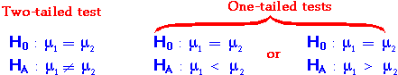
Test statistic, p-value and conclusion
Consider a test for the hypotheses,
H0 : μ1 = μ2
HA : μ1 > μ2
The alternative hypothesis is only supported by very small values of  .
This also corresponds to small values of the test statistic t ,
so the p-value is the lower tail probability of the t distribution.
.
This also corresponds to small values of the test statistic t ,
so the p-value is the lower tail probability of the t distribution.

A small p-value is interpreted as giving evidence that H0 is false, in a similar way to all other kinds of hypothesis test.
Examples
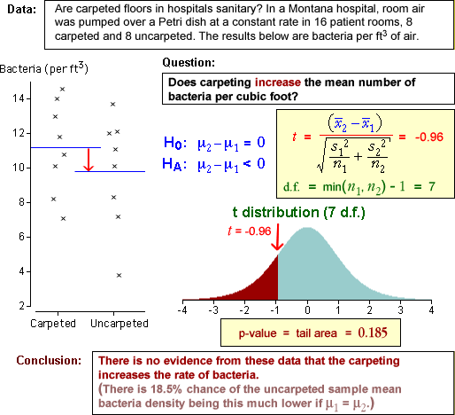
Properties of p-values
We again stress that a statistical hypothesis test cannot provide a definitive answer. The randomness of sample data means that p-values are also random quantities, so there is some chance of us being misled by an 'unlucky' sample:
Paired data
When two types measurements, X and Y, are made from each individual (or other unit), the data are called bivariate. Sometimes the two measurements are of closely related quantities and may even describe the same quantity at different times.
When the sum or difference of X and Y is a meaningful quantity, the data are called paired data.
Hypotheses of interest
For paired data, We often want to test whether the means of the two variables are equal,
H0 : μX = μY
HA : μX ≠ μY
Sometimes a one-tailed test is required, such as
H0 : μX = μY
HA : μX > μY
Examples
Differences
Information about the difference between the means of X and Y is contained in the values D = (Y - X) for each individual. The hypotheses
H0 : μX = μY
HA : μX ≠ μY
can then be expressed as
H0 : μD = 0
HA : μD ≠ 0
This reduces the paired data set to a univariate data set of differences, D, and reduces questions about (µY - µX) to questions about the mean of D.
Analysis of paired data
By taking differences between Y and X, much of the variability between the individuals is eliminated, making it easier to see whether their means are different. The example below shows paired data on the left with blue lines joining the x- and y-values in each pair. The differences on the right make it clearer that the y-values are usually higher than the corresponding x-values.
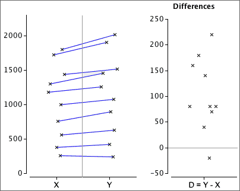
Approach (paired t-test)
Testing whether two paired measurements, X and Y, have equal means is done in terms of the differences
D = Y - X
The test is then expressed as
H0: µD = 0
HA: µD ≠ 0
or a one-tailed variant. The hypotheses are therefore assessed with a standard univariate t-test using test statistic

This is compared to a t distribution with n - 1 degrees of freedom to find the p-value.
Example
The diagram below illustrates a 2-tailed test for equal means, based on n = 15 paired observations.
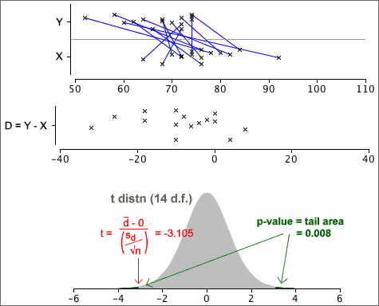
From the p-value, we conclude that there is very strong evidence that the means for Y and X are different.
Choice between paired data or two independent samples
It is sometimes possible to answer questions about the difference between two means by collecting two alternative types of data.
If the individuals in the 2 groups can be paired so that the pairs are relatively similar, a paired design gives more accurate results.
Matched pairs in experiments
In experiments to compare two treatments, it may be possible to group the experimental units into pairs that are similar in some way. These are called matched pairs. If the two experimental units in each pair are randomly assigned to the two treatments, the data can be analysed as described in this section.
The difference between the treatments is estimated more accurately than in a completely randomised experiment.
Data
In this section, we examine data that may arise as:
We will model the data in terms of g groups. The data often arise from completely randomised experiments with g treatments.
Model
The model that was used for 2 groups can be easily extended to to g > 2 groups, allowing different means and standard deviations in all groups.
| Group i: | Y ~ normal (µi , σi) |
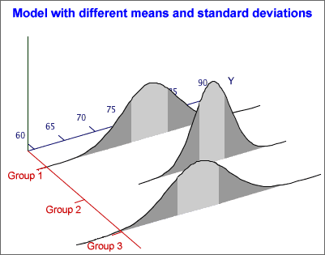
However to develop a test for equal group means with g > 2 groups, we must make an extra assumption that the standard deviations in all groups are the same.
| Group i: | Y ~ normal (µi , σ) |
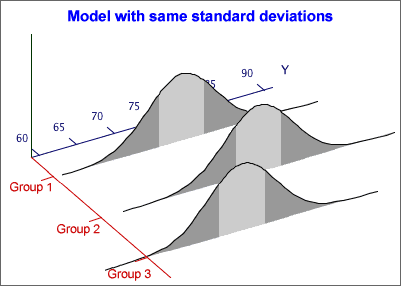
If there are g groups, this model has g + 1 unknown parameters — the g group means and the common standard deviation, σ. It is flexible enough to be useful for many data sets.
If the assumptions of a normal distribution and constant variance do not hold, a nonlinear transformation of the response may result in data for which the model is appropriate.
Estimating the group means
We now assume a normal model with the same standard deviation in each group,
| Group i: | Y ~ normal (µi , σ) |
The sample means provide estimates of the {µi}:
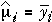
Estimating σ2
The sample standard deviation in any single group, si, is a valid estimate of σ, but we need to combine these g separate estimates in some way.
It is easier to describe estimation of σ2 rather than σ. If the sample sizes are the same in all groups, a pooled estimate of σ2 is the average of the group variances,
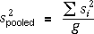
If the sample sizes are not equal in all groups, this is generalised by adding the numerators and denominators of the formulae for the g separate group variances,
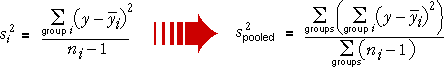
More mathematically, yij denotes the j 'th of the ni values in group i , for i = 1 to g . The pooled estimate of σ2 can then be written as
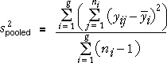
The pooled variance is influenced most by the sample variances in the groups with biggest sample sizes.
Revisiting the difference between two group means
In an earlier section, we described confidence intervals and tests about the difference between two group means, µ2 - µ1. They can be improved if we can assume that
σ1 = σ2 = σ
Inference is still based on  ,
but the equation for its standard deviation can be simplified
,
but the equation for its standard deviation can be simplified

Confidence interval
A 95% confidence interval for µ2 - µ1 has the same general form as before,

but the standard deviation and the degrees of freedom for the t-value, ν, are different.
| degrees of freedom | ||
|---|---|---|
| Allowing σ1 ≠ σ2 | min( n1 - 1, n2 - 1) | |
| Assuming σ1 = σ2 = σ | n1 + n2 - 2 |
If it can be assumed that σ1 = σ2, the confidence interval is usually narrower.
Example
The diagram below shows 95% confidence intervals obtained by the two methods.
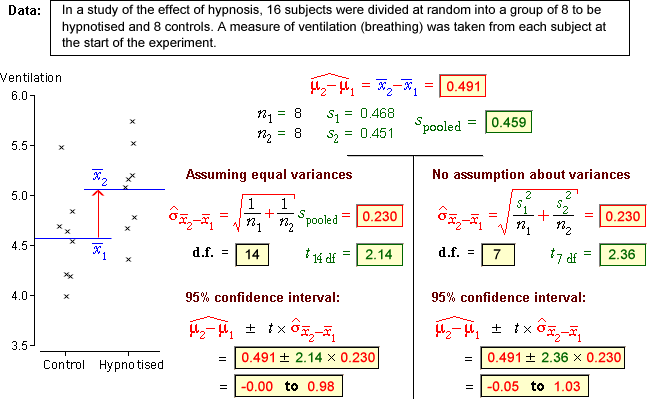
The p-value for this test is found from the tail area of the t distribution with (n1 + n2 - 2) degrees of freedom.
Comparing several groups
A new approach is needed to compare the means of three or more groups — the methods for two groups cannot be extended. We again assume a normal model with equal standard deviations,
| Group i: | Y ~ normal (µi , σ) |
Testing whether there are differences between the groups involves the hypotheses,
H0 : µi = µj for
all i and j
HA: µi ≠ µj for
at least some i, j
Variation between and within groups
Testing whether the model means, {µi}, are equal is done by assessing the variation between the group means in the data. However, because of randomness in sample data, the means are unlikely be the same, even if H0 is true.
In the example on the left below, the group means vary so much that the {µi} are almost certainly not equal. However the group means on the right are relatively similar and their differences may simply be randomness.
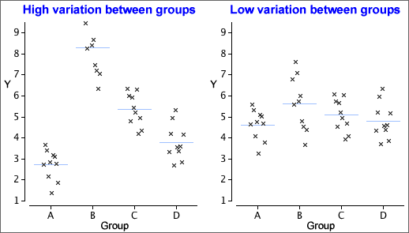
To assess whether the means are 'unusually different', we must also take account of the variation within the groups. The data set on the left below gives much stronger evidence of group differences than that on the right, even though the group means are the same in both data sets.
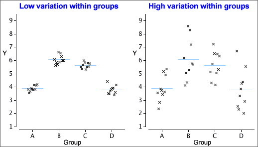
The evidence against H0 depends on the relative size of the variation within groups and between groups.
Notation
In the formulae in this page, the values in the i'th group are denoted
by yi 1, yi 2,
... . More generally, the j'th
value in the i'th group is called yij and
the
mean of the values in the i'th group is  .
.
Total variation
| 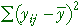 | The total sum of squares reflects the total variability of the response. |
The overall variance of all values (ignoring groups) is the total sum of squares divided by (n - 1).

| 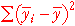 | The sum of squares between groups measures the variability of the group means. |
Variation between groups is summarised by the differences between the group means and the overall mean. Note that the summation is over all observations in the data set.

| 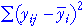 | The sum of squares within groups quantifies the spread of values within each group. |
This is also called the residual sum of squares since it describes variability that is unexplained by differences between the groups. Note that the pooled estimate of the common variance, σ2, is the sum of squares within groups divided by (n - g).

Sums of squares
| Sum of squares | Interpretation |
|---|---|
| Overall variability of Y, taking no account of the groups. | |
| Variability that cannot be explained by the model. | |
| Variability that is explained by the model. |
Coefficient of determination
The proportion of the total sum of squares that is explained by the model is called the coefficient of determination,

Example

Hypothesis test
The following hypotheses are used to test whether the group means are all equal:
H0 : µi = µj for
all i and j
HA: µi ≠ µj for
at least some i, j
We will describe some of the steps for this test, but cannot justify them here.
Mean sums of squares
The three sums of squares are first divided by values called their degrees of freedom:
| 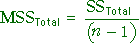 | The mean total sum of squares is the sample variance of the response (ignoring groups). |
| The mean within-group sum of squares is the pooled estimate of the variance within groups. | |
| The mean between-group sum of squares is harder to directly interpret. |
The numerators in these ratios add up:
SSTotal = SSBetween + SSWithin
and the same relationship holds for their denominators (degrees of freedom):
dfTotal = dfBetween + dfWithin
F ratio and p-value
The test statistic is an F-ratio,

This test statistic compares between- and within-group variation. The further
apart the group means, the larger SSBetween and the larger the F-ratio.
Large values of F suggest that H0 does not hold — that the group means are not the same.
The p-value for the test is the probability of such a high F ratio if H0 is true (all group means are the same). It is based on a standard distribution called an F distribution and is interpreted in the same way as other p-values.
The closer the p-value to zero, the stronger the evidence that H0 does not hold.
Analysis of variance table
An analysis of variance table (anova table) describes some of the calculations above:


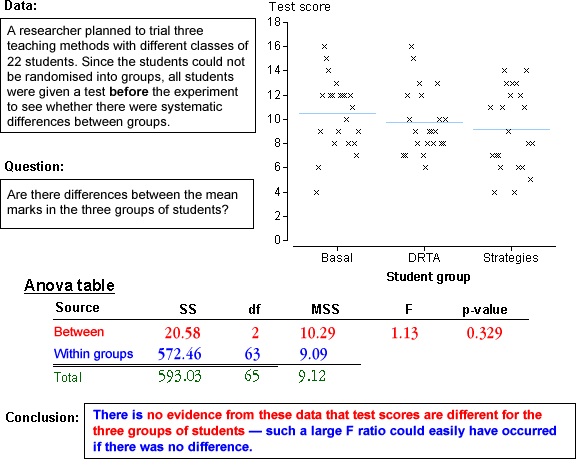